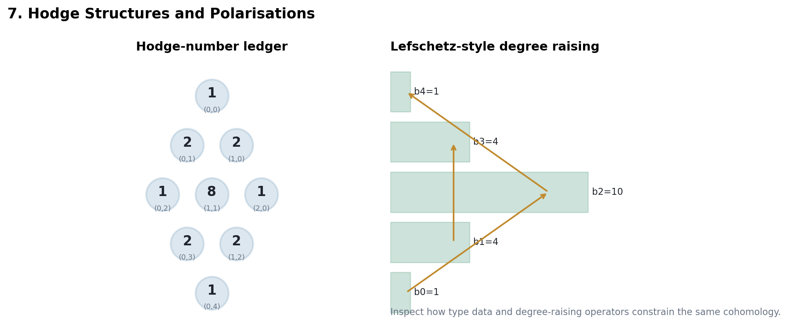

Unit 7 - Hodge Structures and Polarisations
From the Hodge decomposition of a compact Kahler manifold to the linear algebra of rational lattices, filtrations, bilinear forms, and functorial maps.
Integral or rational lattice, complex decomposition, conjugation, and weight.
A polarisation turns the decomposition into signed orthogonality and positivity.
Pullback, Gysin, strictness, and blowup contributions preserve bidegree with shifts.
The source span is best read as a controlled transfer from geometry to algebra and back.
A geometric cohomology group becomes useful here only after the rational form, Hodge filtration, and pairing are recorded together.
A pure integral Hodge structure of weight \(k\) is a free abelian group \(V_{\mathbb Z}\) with
\(V_{\mathbb C}=\bigoplus_{p+q=k} V^{p,q}, \qquad \overline{V^{p,q}}=V^{q,p}.\)
The rational version replaces \(V_{\mathbb Z}\) by \(V_{\mathbb Q}\).
For a morphism of Hodge structures, the filtration is the interface:
\(\phi(F^p V_{\mathbb C}) \subseteq F^{p+r}W_{\mathbb C}.\)
The strictness statement says images, kernels, and cokernels inherit the expected filtered structure when the morphism respects type.
A bilinear form \(Q\) polarises the weight \(k\) structure when it has the correct symmetry, pairs only complementary bidegrees, and satisfies the Hodge-Riemann sign condition.
\(i^{p-q}(-1)^{k(k-1)/2} Q(v,\overline v) > 0\)
The positivity is read on the appropriate nonzero \(V^{p,q}\) component, and in geometry it is refined by primitive decomposition.
The chapter uses the line-bundle criterion and Kodaira embedding as the bridge from polarised Kahler geometry to smooth projective varieties.
The practical conclusion is: an integral positive class gives enough holomorphic sections to embed \(X\) into projective space.
For the lecture, treat this bridge as a structural theorem: the polarising class is not merely a cohomology class; it supplies the projective model in which algebraic geometry can operate.
\(H^{2k}(\mathbb P^n,\mathbb Z)=\mathbb Z\cdot H^k,\quad H^{2k+1}=0.\)
The Hodge structure is concentrated on the diagonal. The hyperplane class \(H\) supplies the generator and the polarising Lefschetz operator.
A weight one structure has \(V_{\mathbb C}=V^{1,0}\oplus V^{0,1}\). Its lattice and \(V^{1,0}\) determine a complex torus.
\(T = V_{\mathbb C}/(F^1V_{\mathbb C}+V_{\mathbb Z})\)
Notebook lab: assemble a toy period matrix and test the Riemann bilinear relation by changing one entry at a time.
When \(h^{2,0}=1\), the structure is determined by the line \(H^{2,0}=\mathbb C\sigma\).
The polarising form cuts out the conditions \(Q(\sigma,\sigma)=0\) and \(Q(\sigma,\overline{\sigma})>0\).
| Operation | Hodge bookkeeping |
|---|---|
| Pullback | preserves type \((p,q)\) |
| Gysin map | adds a degree and type shift |
| Substructure | inherits filtration strictly |
| Blowup | adds shifted cohomology from the center |
A correct topological degree is not enough. The Hodge bidegree and Tate shift must be tracked simultaneously.
\(H^k(\widetilde X)\cong H^k(X)\oplus \bigoplus_i H^{k-2i}(Y)(-i)\)

A pure Hodge structure is a rational or integral lattice plus a weight-compatible complex decomposition.
A polarisation is the pairing that turns Lefschetz decomposition and Hodge-Riemann positivity into rigid linear algebra.
Projective space, abelian varieties, and K3-type weight two structures show how much geometry the linear data can remember.
Given a filtered vector space with the right dimensions, identify the extra data needed before calling it a polarised Hodge structure.